Case study · Passenger app · Ride-hailing in Paraguay
muv: an easier way to get a ride
I designed muv's passenger app end to end, from survey and funnel analysis to a launched app. Onboarding went from 21 steps to 6, and the ride flow now says what is happening at every state.
Role
Sr Product Designer: research, UX, UI, design system, dev QA
Team
Passengers: Nathalia (PM), engineering, data
Company
muv
Timeline
One quarter: research, design, test
Launch
May 2026, iOS and Android
People liked muv once they were in the car. Getting there was the problem.
muv is a Paraguayan ride-hailing marketplace. Riders place it between Uber, the safe and established option, and Bolt, the cheap one: muv is the good service, with a fair price for the quality, good drivers and a car that is easy to spot.
The business was growing fast on the legacy app, from 1,000 to 6,000+ drivers and from 2,000 to 39,000 passengers since 2024. But in a June 2025 survey, overall satisfaction came out at 5.99 out of 10: neutral, with nothing that builds loyalty.
Where the survey said it hurt
% of respondents
Say waiting-time estimates aren't accurate67%
Say the cars shown as available aren't accurate60%
Disagree that booking a car is fast50%
Disagree that the car's location is reliable46%
Find searching and booking a car difficult39%
Find the map and the route hard to see31%
Survey, June 2025, 120–148 answers per question. The sample was mostly customers of B2B brands, so it leans towards corporate users.
Most of this was technical and about driver availability, not about the interface. Design couldn't make an ETA accurate, but it could stop leaving people guessing.
That became the brief: make every state of a ride explicit, predictable and trustworthy.
"La app te dice 1 minuto y en verdad es 10 o más."
The app says 1 minute and it's really 10 or more.
Survey respondent, June 2025
"Buenas tarifas pero nadie te acepta nunca."
Good fares, but nobody ever accepts your ride.
Survey respondent, June 2025
"En Asunción muy pocos conductores aceptan los viajes. En Encarnación siempre tengo buen servicio."
In Asunción very few drivers accept trips. In Encarnación I always get good service.
Survey respondent, June 2025
Two sources, two problems
The survey
Registering and logging in were rated easy. The trouble was using the app: finding, booking and following a car.
The funnel
Onboarding had 21 steps, and only 25% of the people who started it finished it.
The survey only reached people who had already made it in, so it couldn't see the drop-off. The funnel could. Onboarding had to bring more people in, and the ride flow had to keep them.
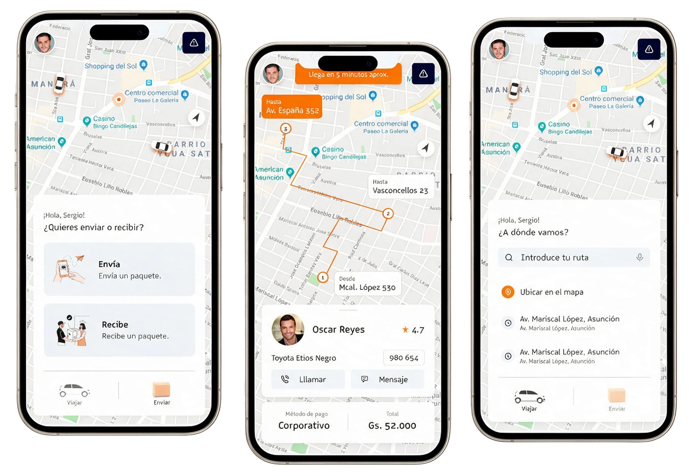
The legacy app: a home built around a route search field and recent addresses, a send or receive chooser, and a trip view with numbered stops, the driver card and the payment method.
What we set out to do
Get to a first successful ride faster.
Make ride states explicit and predictable, with real-time feedback people can trust.
Keep the UI aligned with the backend states, so the screen says what is actually happening.
Show promotions across the interface.
Build a reusable system for future features.
What I redesigned
Onboarding
Includes the Unid integration and the value proposition, with a basic profile setup.
Home and navigation
A hybrid navigation model.
Trip and send
Requesting a ride, and sending or receiving packages.
Reviews
A new section to gather feedback and improve the product.
Secondary flows: account, favorites, payment methods, my trips and promotions.
Designing the ride as a set of states
A ride is a real-time system, so what the passenger sees has to match what the backend is doing. Before opening Figma I mapped the whole journey as five states, and wrote what the passenger should read in each one.
Request initiated
Route on the map. A skeleton loader shows while availability is calculated.
Matching in progress
A five-minute free-cancellation countdown runs while the driver decides.
"Esperando confirmación del conductor…" "Ampliando radio de búsqueda"
Driver assigned
"Driver confirmado ✨ · Juan está en camino · ACG 546TY"
Ride in progress
"Juan empezó tu viaje · 10 min para llegar"
Ride completed or cancelled
Review with preset comments and trip characteristics.
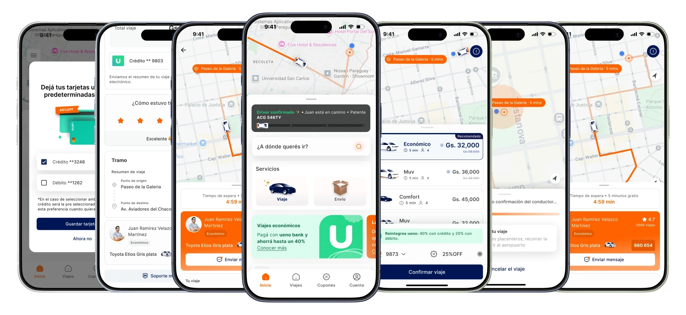
The whole passenger app, from home and categories to matching, driver assigned and review.
Home: photo or map?
I put two low-fidelity homes in front of users: a photo header, and a live map. The map won.
It wasn't about looks. People think about a ride spatially: where am I, where is the car. So the map became the home, and the services sit in a sheet over it.
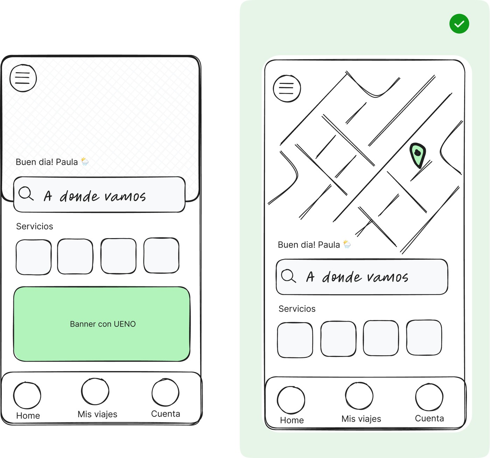
Photo header vs map header. The map option is the one we kept.
Low-fidelity, four key screens
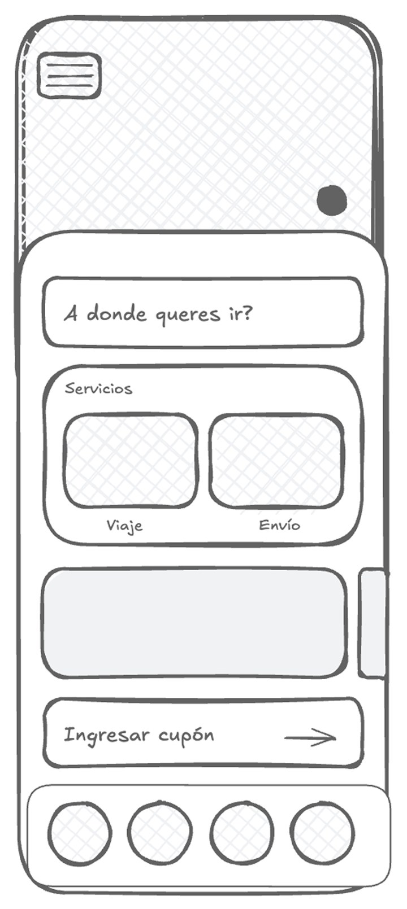
Home
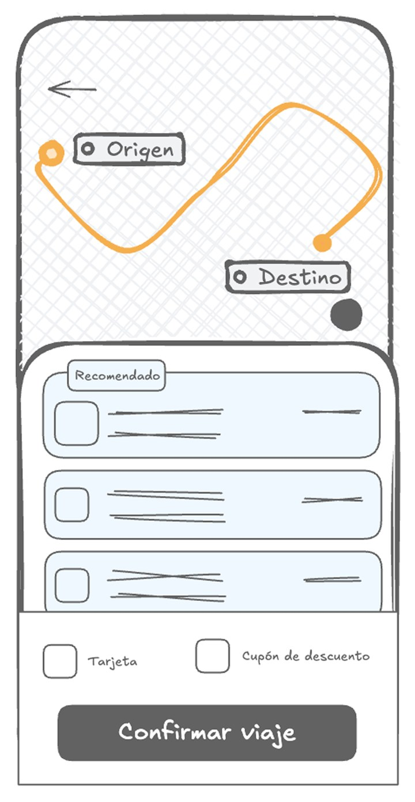
Categories
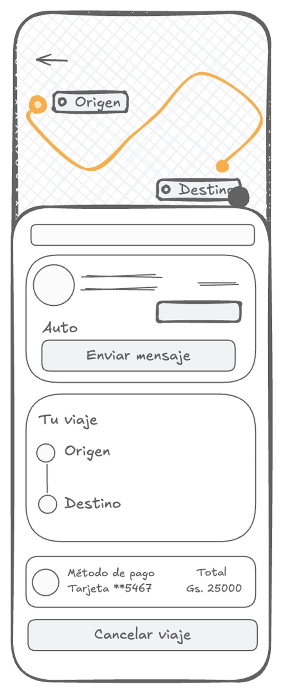
In trip
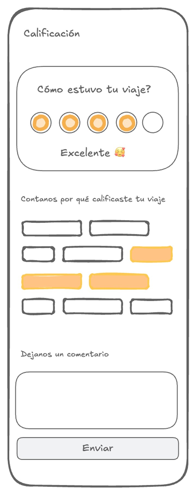
Review
Home, trip category selection, in-trip driver state and review. Validating hierarchy and state transitions here caught edge cases before visual design.
From destination to confirmation in four screens
Destination, categories, searching, confirmed. Every screen tells the passenger what the app is doing, so nothing feels stuck.
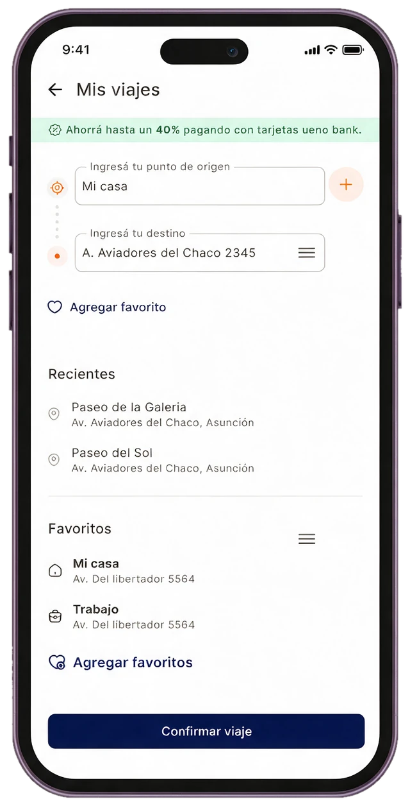
Ingresá tu destino
Destination
Origin and destination, with recents and favorites one tap away. The ueno rebate is already visible.
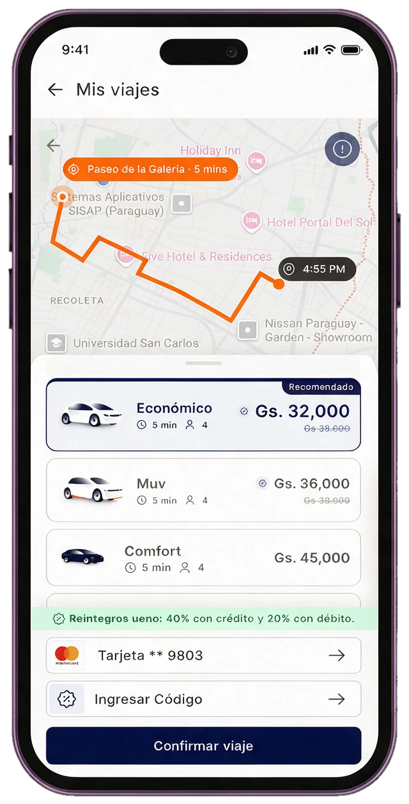
Confirmar viaje
Categories
Económico, Muv and Comfort with time, seats and price. "Recomendado" is preselected, and the rebate sits above the payment method.
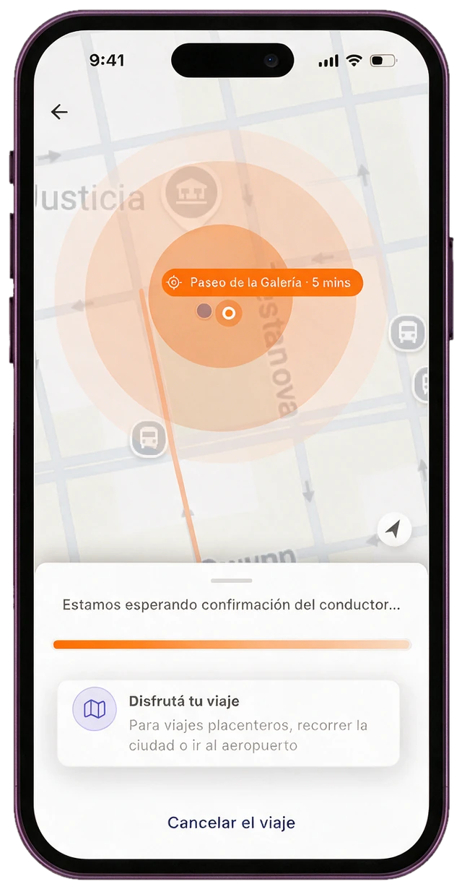
Esperando confirmación
Searching
Ripples spread around the pickup while the driver decides. A card fills the wait, and cancelling stays one tap away.
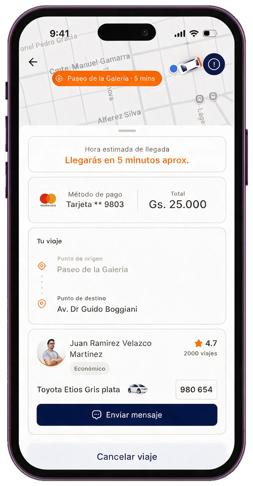
Llegarás en 5 minutos
Driver confirmed
The ETA leads, then payment and the trip. The driver card shows who is coming, in which car, with the plate and one button to message.
The same flow, for sending a package
Envío reuses the trip flow and its components: address entry, categories with a recommended option, and one clear action. Sending needs a card, so the home asks for one first. After the details step comes the delivery, and the same rating.
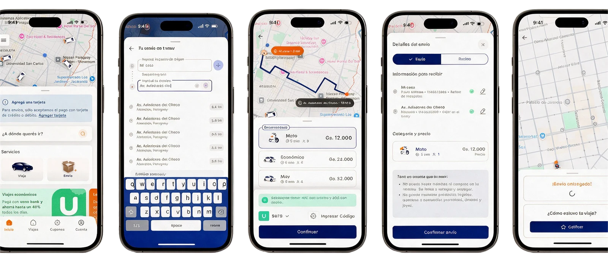
Envío: add a card, enter the addresses, pick a category (Moto, Económico or Muv), review the package details, and rate the delivery.
Motion that explains the wait
Waiting is the hardest moment in a ride app, so motion here has one job: answer the question before the passenger asks it. Is it working? Where am I? What happens next?
These are recreated in code from the prototype's real timings, so you can watch them without opening Figma. The map is stylized; the timings are not.
Searching for a driver
Five things move at once, and each has a different job.
Map camera
Overview, origin, destination, origin. It holds 2.5 s, 2.5 s, 2 s, 2 s, then moves on a Gentle spring (1.02 s). It tells the passenger the app knows both ends of the trip.
Route trace
The highlighted line runs along the streets to the destination and back, about 5 s per round trip (my approximation of the prototype). It says the route is known and the trip is alive.
Ripple at pickup
Three states loop every 1.8 s, each change 0.3 s ease-out. It says we are searching around you.
Location ping
A ring grows over 1.25 s on a slow spring, then snaps back in 0.3 s. It says this is you, and it's live.
Skeleton shimmer
A highlight sweeps in 1 s (ease-out) every 2 s. It says content is coming, and the sheet won't jump when it arrives.
The sheet holds its shape while availability loads. After 2 s the real categories rise in on a Gentle spring (1.02 s), and the skeleton fades out.
Recomendado
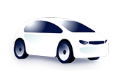
Económico
5 min 4
Gs. 32,000Gs. 38,000
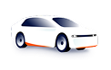
Muv
5 min 4
Gs. 36,000Gs. 38,000
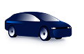
Comfort
5 min 4
Gs. 45,000
Moto
Confirmar viaje
Rating that adapts
Try it. The tags change with the score, chips answer a tap in 0.2 s, and on submit the card leaves after a 0.2 s pause on a 1.28 s Gentle spring.
CalificaciónCerrar
¿Cómo estuvo tu viaje?
Sin calificar
¿Querés dejar un comentario?
The motion system behind it
Two rules keep it calm: touch feedback is fast and sharp, and state changes are soft and spring-based. Values read straight from the prototype.
Motion tokens used across the passenger prototype
Where
Duration
Easing
Buttons, inputs, icons: hover and press
0.2 s
cubic-bezier(0.2, 0, 0, 1)
Sheets and modals sliding in
0.3 s
Ease-out
Splash and dissolves
0.3 s
Ease-in-out
Tabs
0.6 s
Ease-out
Ripple states
0.3 s
Ease-out
Skeleton shimmer
1 s, every 2 s
Ease-out
Location ping
1.25 s
Slow spring
Screen and state changes: camera, skeleton to content
1.02 s
Gentle spring
Rating submit
1.28 s, after 0.2 s
Gentle spring
Four decisions that shaped the product
Map first, one search field
The home is a live map with a single "¿A dónde querés ir?" field. The two services, Viaje and Envío, sit in a sheet over it, and the sheet changes with what is happening: an active trip, a pending rating, or recent destinations. It came straight from the test: people think about a ride spatially.
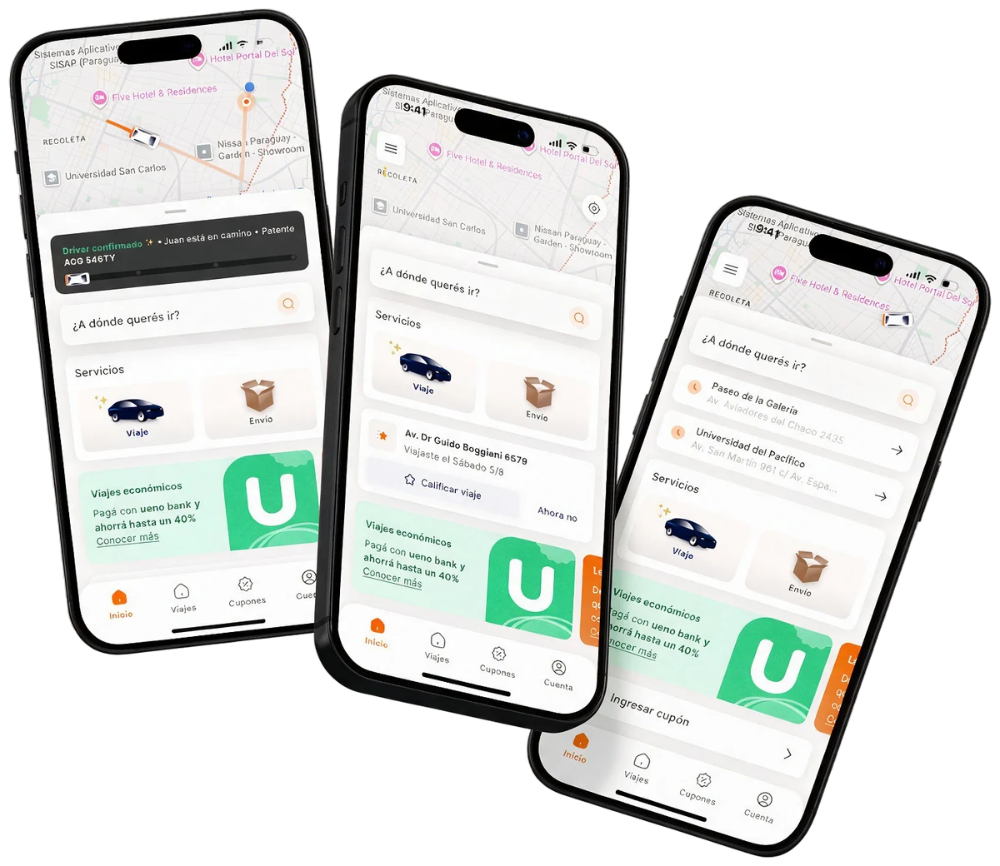
Always say what's happening
60% of respondents didn't trust the cars the app showed, and accuracy wasn't something design could fix. So every wait has a name and an end: a skeleton while availability is calculated, "Esperando confirmación", "Ampliando radio de búsqueda", and a five-minute free-cancellation countdown while the driver decides.
Recommend one category, show the reward where the decision happens
Preselecting "Recomendado" (Económico) lets a passenger confirm in one tap, and steers demand towards the category the business wants to grow. The other categories stay in the same list.
Credit cards were the first payment method in the survey, so the ueno bank rebate (40% back with a credit card, 20% with debit) shows on the destination screen and again above the payment method, instead of on a separate promo screen.
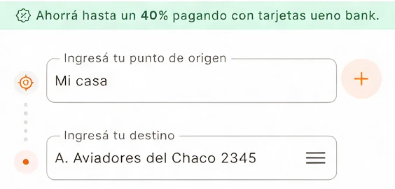
On the destination screen
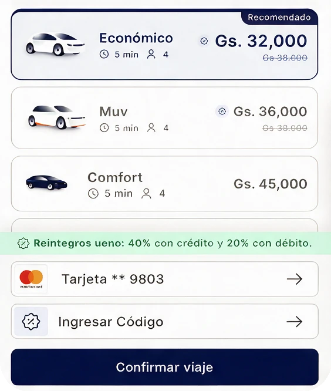
Again above the payment method
Navy for action, orange for the brand
White text on the brand orange reaches only 3:1 contrast. On navy it clears 17:1. So primary buttons are navy, and orange carries route lines, tags and highlights.
Placeholder current review screen with the navy Finalizar button
What testing told us
I tested the prototype on two tasks: requesting a trip, and taking a trip with stops and rating it.
Results by task
Task
What worked
What needs work
Request a trip
The search-bar request flow and the confirmation step.
The search animation and placing the pin by hand on the map.
Search should prioritise results near the user (Asunción), so trips don't resolve to addresses in other cities.
Trip with stops
The search animation.
People found the feature, but the logic confused them: where the stop goes, and an icon-only entry point. They preferred text over an icon alone.
Rating
Preset comments, emojis and three trip characteristics. The characteristics helped people give a better rating.
Ratings skew to 5 stars when the ride is fast and uninterrupted, and bad ones show up only after extreme experiences.
Continuing without writing a comment needs a clearer path.
See it move
The full passenger journey, screen by screen: from opening the app to rating the ride.
What changed
21 → 6
Steps in onboarding.
25% → 36%
Of people who started onboarding finished it: +11 percentage points.
The business after launch
The new passenger app launched in May 2026 and the numbers moved. But it didn't move them alone: the app is one of five levers.
Passengers
39KQ4 2025→81K2026
Trips
2.2M+Q4 2025→5.1M+2026
GMV
Gs 40.1BQ4 2025→Gs 94.6B2026
Product and design
New passenger app, with UNID: one login across the ecosystem
Ueno Bank integrated as a payment method
Business and supply
Positive commission across Paraguay
Driver app stabilization
Automatic dynamic pricing
Design shaped the first two levers: onboarding and login, and how payment and rewards show up in the flow. The other three are business and supply work, and I'm not claiming them.
The funnel baseline still to re-measure
Q4 2025, on the legacy app. These two are the funnel numbers the new app should beat.
59%
Of registered passengers take a first trip.
52%
Of those who take a first trip are still riding by their fourth.
What I learned
State management is the design
Mapping every state before opening Figma saved weeks of rework and made the experience coherent from end to end.
Test the direction, not the detail
The map vs photo test wasn't about visual preference. It was about mental model, and that settled the whole home.
Visual QA in Dev Mode is collaboration
Annotating design against implementation in Figma Dev Mode turned QA from a confrontation into a shared task.
Every stakeholder wanted to add. Every user wanted less.
Holding that line, and backing it with data, is a design skill as important as any visual craft.
If I had more time
Measure the change. Re-run the survey after launch, with a sample that isn't mostly B2B-brand customers.
Research the supply side. Riders' biggest complaint was drivers not accepting trips, so a driver survey is the next study.
Close what testing flagged. Replace icon-only entry points with icon plus label, and clarify how stops work.
Component libraryDriver card, category card, ride-state alerts and toasts+
State-driven
Every component maps to a backend state, so there is no ambiguity between the UI and the system.
Information hierarchy
Driver, ETA and plate are always prominent. Payment and route are contextual.
Reusable by design
States are props on one component, not separate components.
Driver card
Two variants that follow the ride phase. While waiting: a free-cancellation countdown. In transit: a live ETA.
WaitingCountdown, driver photo and rating, message, trip and payment summary.
In transitHighlighted ETA, payment summary, route detail, message and cancel.
Category card
The core decision unit of the request flow. Selected ("Recomendado", navy highlight) and unselected (with a promo badge), showing price, ETA and seats at a glance.
SelectedRecomendado badge, navy border, price emphasis.
UnselectedDiscount badge, struck-through original price.
ListingEconómico, Muv and Comfort in one list.
Ride-state alerts
Real-time messages for every state change, including when the app is in the background.
SearchingAnimated progress bar shows the search is active.
In transitA car moves along the bar, with a real ETA.
Permission"¿Querés recibir alertas del viaje en tiempo real?" appears at the moment it is useful.
Toasts
Instant feedback for payment and system events. Three semantic variants, one structure: icon, message and an optional inline action.
ErrorPayment failed, with an inline "Modificar" action.
WarningOutstanding debt, with an inline "Mostrar deuda" action.